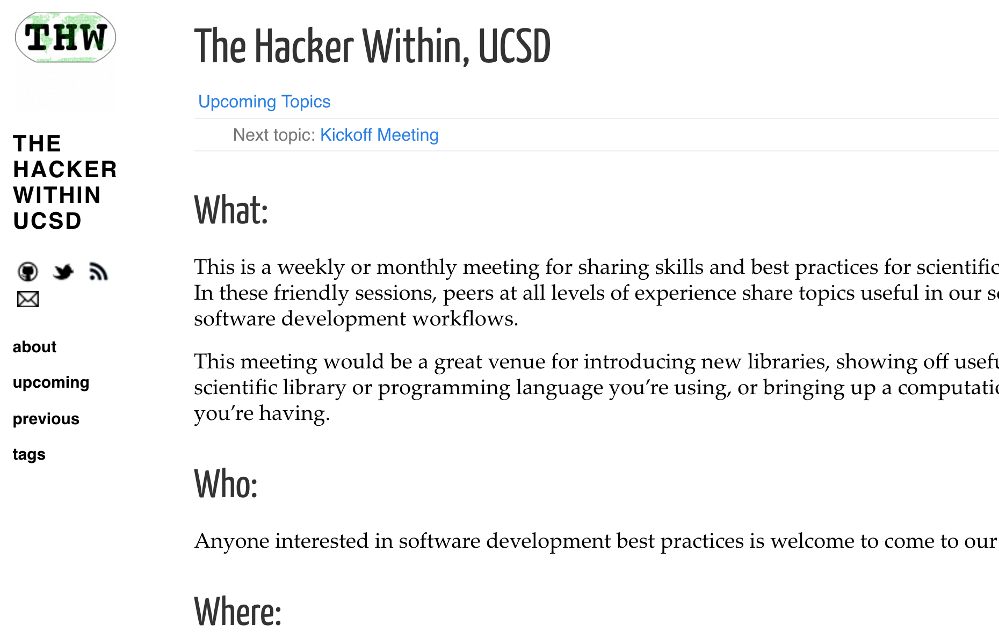

name: inverse
layout: true
class: center, middle, inverse
---
# The Hacker Within 
# UC San Diego Chapter

.footnote[Research Developer Roadshow ]

---
layout: false

# What is The Hacker Within

* Meeting of scientists/researchers who are always learning new **tips and tricks** to make their computational work flow more smoothly
* Peers at all **levels of experience** share topics useful in our scientific software development workflows
* Great venue for introducing **new libraries**, showing off **useful features** of a tool you are using, or bringing up a **problem** you’re having
* Organized as Chapters by University/Research Organization
   * Current chapters: University of Illinois at Urbana–Champaign, UC Berkeley, UC Davis, Swinburne (Austrailia), International Institute for Applied Systems Analysis (IIASA) Austria

---


# Example Topics from Other Chapters

???
* Discussing computational problems with a project
* Useful features or tips-and-tricks of a programming language used in a project
* Demonstrating and discussing a project or technology
* Python, Machine Learning, RStudio, Bash, Visualizations, HPC, Git

---


.center[<http://www.thehackerwithin.org/davis/posts/sql>]
---


---
.center[<http://www.thehackerwithin.org/illinois/posts/make-build-sys-f16>]


---


.center[<http://www.thehackerwithin.org/berkeley/posts/gpus-parallelization-fall-2015>]

---


.center[<http://www.thehackerwithin.org/berkeley/posts/python-olympics>]
---


.center[<http://www.thehackerwithin.org/iiasa/posts/git-introduction>]

---
layout: false
.left-column[
## How it works:

]
.right-column[
1. First meeting of the quarter is used to generate topics and schedule talks
   * E.g. What do you want to learn? What would you like to teach? 
2. For main meetings, we gather and go through a round of introductions
3. A volunteer will give a tutorial or lead a discussion about a computational topic for about 40-45 minutes
4. There will be a time for a couple of Lightning Talks, which are 5-10 minute blasts of information about a particular topic or question of interest to the group
]

---
.left-column[
##How it is organized
]
.right-column[
* Use a Hacker Within GitHub repository to schedule event
* It's encouraged to provide code from events in compute notebooks like Jupyter or Rmarkdown (where possible)
* Less is more moto
]
---

.left-column[
## Who is this for?
]
.right-column[
* Anyone interested in **software development best practices**
* Anyone who wants to share a tip or trick, a new library, show off useful features of a scientific library or programming language, or bringing up a computational problem
* Anyone who wants to learn about the above
]
---

## Coming in Winter 2017! 



---

## How to get involved

1. Come to the kick-off meeting on 2017-01-19 @4pm (Location TBD) 
2. Sign up for mailing list <http://lib.ucsd.edu/thw>
3. If you are interested in giving a talk, helping host or organize, email <data-consult@ucsd.edu>
4. Look for a survey on our webpage about possible topics and interested volunteers <http://www.thehackerwithin.org/ucsd> 

---

>>The Hacker Within isn't a class and no one is required to attend. We show up to have fun and to learn. Hopefully, your tutorial will teach something useful in a way that is enjoyable. To do this, please consider bringing your A-game. That is, find the enthusiastic tinkering problem-solver inside yourself (The Hacker Within yourself) and bring that version of yourself to share that enthusiasm with us. Enthusiasm is infectious! - https://github.com/thehackerwithin/berkeley
